让开发更加简单，高效；让普通用户拥有更便易的客制化开发方案。
FlyThings IDE（20260403）
适用平台 SSD、Z20、Z21、Z261：
安装完成后，在桌面找到
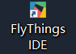
快捷方式，双击运行。bin 文件夹下找到 直接运行。
启动后会弹出工作空间选择界面。工作空间用于存储相关设置及历史记录，可同时管理多个项目。
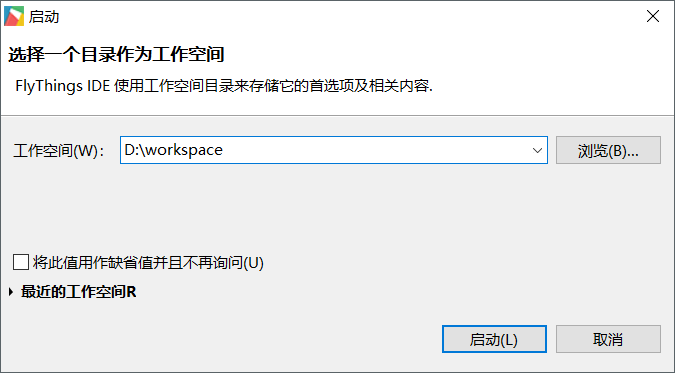
第一次打开或选择新工作空间后，会显示欢迎界面，提供两个快捷功能：
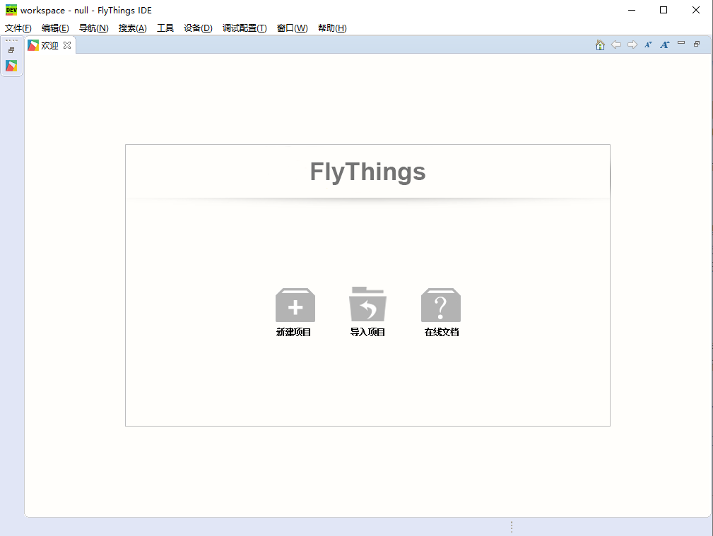
将项目文件夹内的资源文件、代码文件等以树形图的形式显示。可自由展开/收起，双击文件可直接打开编辑。
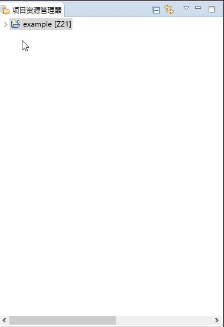
编译代码时，这个位置将输出编译日志。如果编译失败，双击错误提示内容，可直接跳转到对应代码。
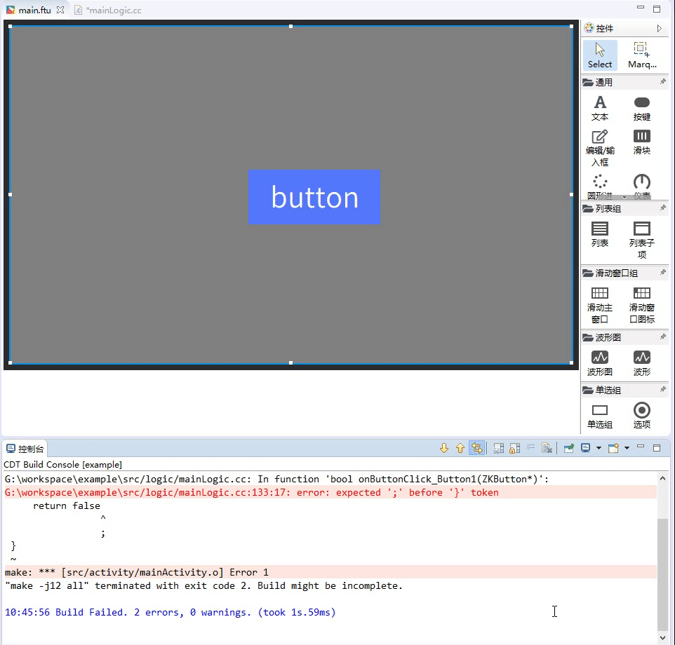
在编辑器顶部的菜单栏中，依次选择 文件 -> 新建 -> FlyThings项目。
上一步选择完成后，将弹出 FlyThings创建向导 提示框。
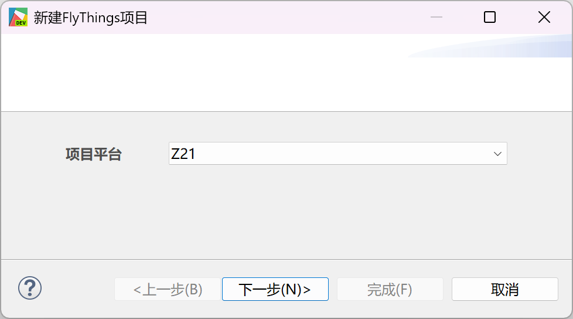
按要求填写新建项目相关的参数。
点击下一步之后，我们将看到更多的参数定义。
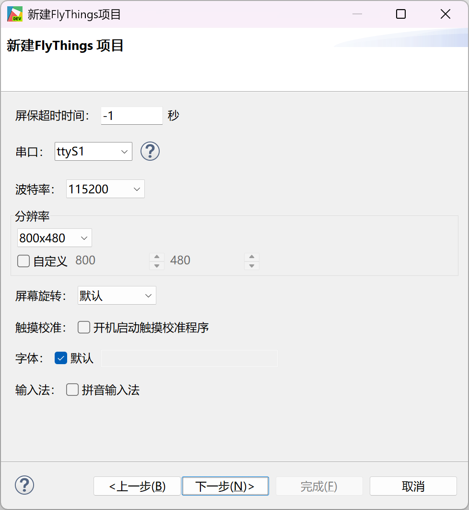
以上属性后续均可再次修改。
继续点击下一步，设置项目名称和保存路径。
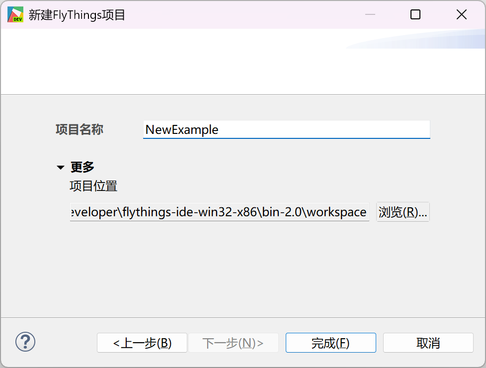
填写完成后点击 完成 结束创建。
在项目资源管理器中，展开项目，选中 ui 文件夹，右键依次选择 新建 -> FlyThings UI 文件。
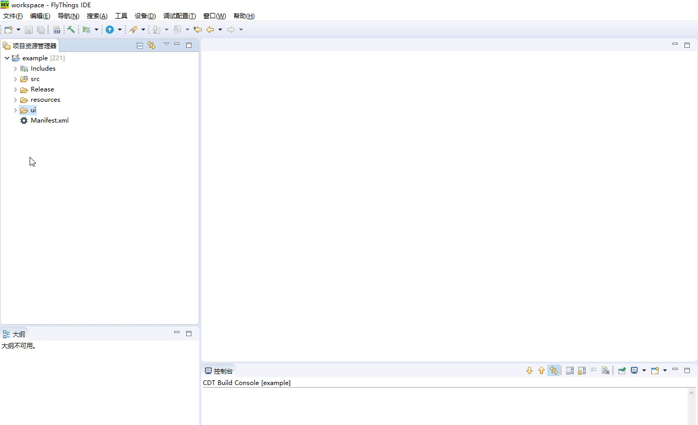
在弹出的向导框中填写以下参数：
ftu。普通，其他类型（状态栏、导航栏、屏保）属于系统界面。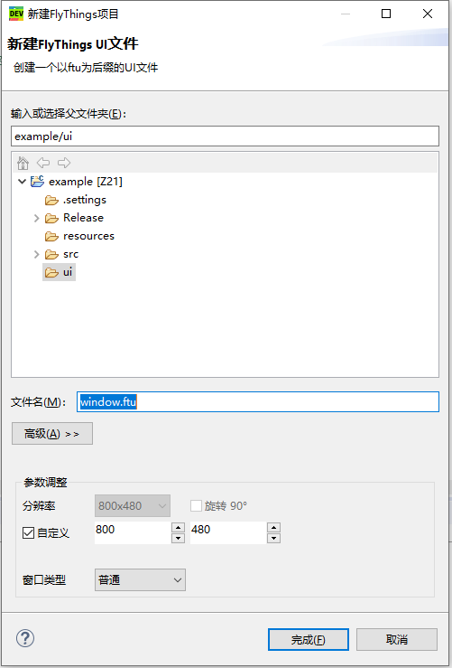
确认参数后点击 完成，新建的UI文件将出现在项目的 ui 文件夹下。
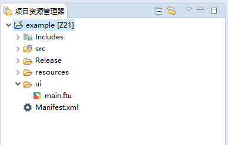
默认的项目，通常有 src、resources、ui 三个文件夹及一个 Manifest.xml 文件。
展开 ui 文件夹，可以看到默认创建的 main.ftu 文件。ftu 是UI文件的后缀名，每一个 ftu 文件对应一个应用界面。
该文件夹的所有内容会随程序一起打包，主要用来存放图片等资源文件。
在代码中可以获取 resources 目录下某个文件的绝对路径：
#include <manager/ConfigManager.h>
std::string test_txt_path = CONFIGMANAGER->getResFilePath("test.txt");
std::string back_png_path = CONFIGMANAGER->getResFilePath("sub/back.png");
主要存放源码文件。
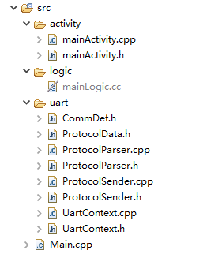
通常包含 activity、logic、uart、Main.cpp。
自动生成的目录，每一个UI文件编译后会生成对应的 Activity 类文件。
⚠️ 注意：不要手动修改
activity文件夹下自动生成的代码。
每一个UI文件编译后都会生成对应前缀名的 Logic.cc 文件，界面的事件与控制逻辑写在这里。
存放串口操作相关的代码，包括读写串口、协议解析等。
整个应用的入口代码，包括选择开机界面及初始化。
#include "entry/EasyUIContext.h"
#include "uart/UartContext.h"
#include "manager/ConfigManager.h"
#ifdef __cplusplus
extern "C" {
#endif
void onEasyUIInit(EasyUIContext *pContext) {
UARTCONTEXT->openUart(CONFIGMANAGER->getUartName().c_str(), CONFIGMANAGER->getUartBaudRate());
}
void onEasyUIDeinit(EasyUIContext *pContext) {
UARTCONTEXT->closeUart();
}
const char* onStartupApp(EasyUIContext *pContext) {
return "mainActivity";
}
#ifdef __cplusplus
}
#endif
项目的清单文件，可用于更改平台、增删依赖包等。详见 Manifest 章节。
FlyThings 将UI与代码区分开来，方便管理。编译前，工具会根据UI文件生成同名前缀的 Logic.cc 文件（增量修改，不会完全覆盖）。工具遍历每个UI文件，为其中的控件声明对应的指针变量，定义在同名前缀的 Activity.cpp 中。
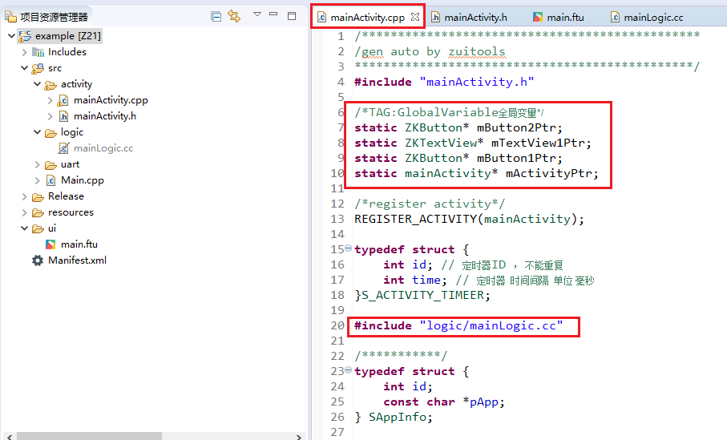
图中可以看到，所有指针为静态全局变量，并且 mainActivity.cpp 中包含了 #include "logic/mainLogic.cc" 语句，因此在 mainLogic.cc 中可以直接使用这些控件指针。
| 函数 | 说明 |
|---|---|
REGISTER_ACTIVITY_TIMER_TAB[] |
用于注册定时器，填写定时器 id 和时间间隔（毫秒） |
onUI_init() |
界面初始化时调用，对应 onCreate() |
onUI_intent() |
切换到该界面时触发 |
onUI_show() |
界面显示时触发 |
onUI_hide() |
界面隐藏时触发 |
onUI_quit() |
界面退出时调用，对应析构函数 |
onProtocolDataUpdate() |
串口数据回调，收到解析后的数据帧时触发 |
onUI_Timer(int id) |
定时器回调，返回 true 继续运行，false 停止 |
有三个地方可以编译。
在项目资源管理器中，右键点击项目名，在弹出菜单中选择 编译FlyThings 即可。
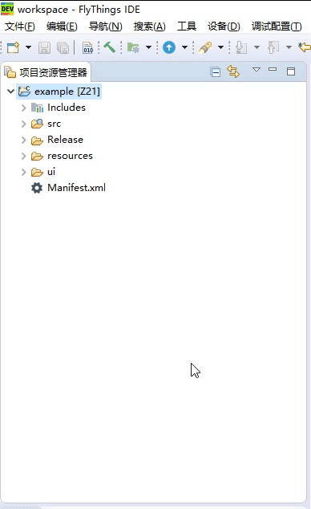
左键选中项目名，再点击工具栏上的 绿色三角按钮即可编译。
快捷键 Ctrl + Alt + Z，推荐使用此方式。
编译时会自动创建 Release 文件夹存放临时文件，可随意删除。也可右键项目名选择 清空项目 来清理缓存文件。
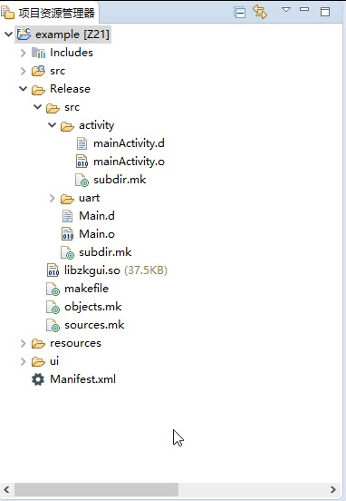
先清理项目，再重新编译即可完全重建。
项目编译后，可通过以下几种方式放到真机运行：
仅支持带 Wi-Fi 的机型。
适用于不带 Wi-Fi 的机型。注意：带 Wi-Fi 的机型 USB 连接无效。
如果 USB 和 Wi-Fi 都不可用，可借助 TF 卡启动程序，具体步骤参考 从TF卡启动程序。
在预览图上选中一个控件，右键选择 跳转到相关代码，即可打开对应的 Logic.cc 文件并定位到关联函数。
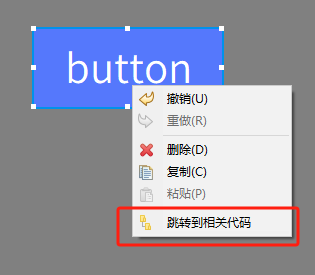
在菜单栏选择 窗口 -> 首选项，在弹出框中进行字体设置。
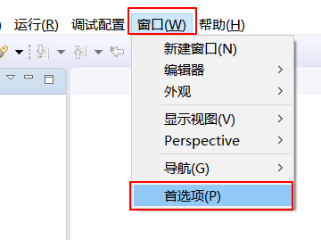
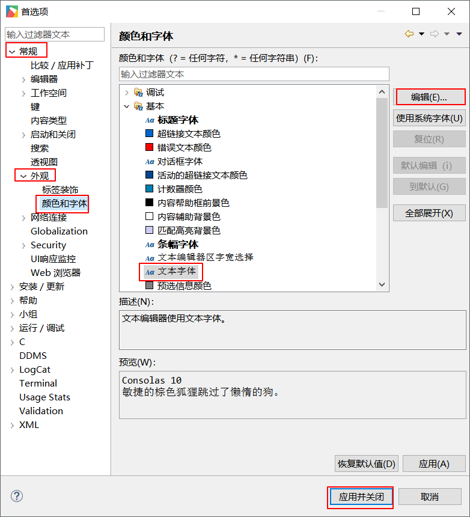
编辑代码时输入起始部分，按 Alt + / 打开代码补全。
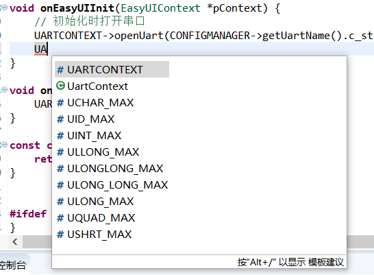
如果代码补全失效或编辑器提示错误但编译正常，请尝试重建索引。
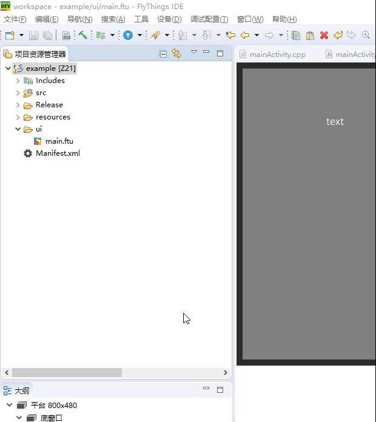
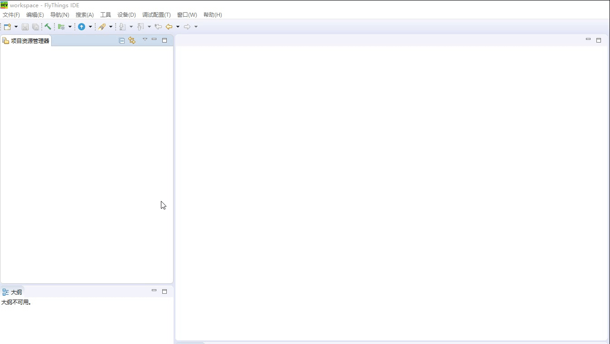
Manifest.xml 是重要的配置文件，通过编辑此文件可以配置项目平台、管理依赖包以及实现更多功能。
双击 Manifest.xml 即可编辑。
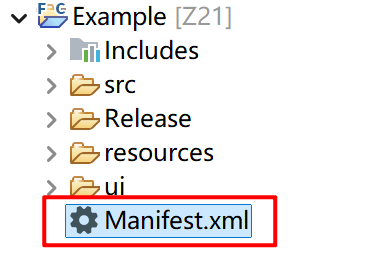
双击 Manifest.xml，在项目平台下拉框中直接切换平台，更改后按 Ctrl+S 保存。
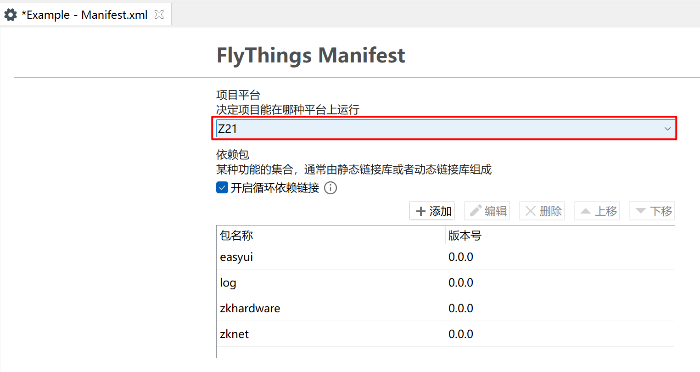
开发工具会根据当前平台生成对应的宏定义，代码中可通过宏定义判断当前平台：
#if __PLATFORM_Z6S__
// Z6S平台
#elif __PLATFORM_Z21__
// Z21平台
#elif __PLATFORM_Z20__
// Z20平台
#elif __PLATFORM_Z261__
// Z261平台
#elif __PLATFORM_T113__
// T113平台
#elif __PLATFORM_T113EMMC__
// T113EMMC平台
#elif __PLATFORM_V85X__
// V85X平台
#endif
当项目需要在多个平台运行时，建议根据宏进行条件编译，只需维护一份代码。
双击 Manifest.xml 开始修改配置。
我们把代码编译为静态/动态链接库后，连同头文件一起打包并赋予版本号上传到服务器，称为 依赖包。可访问 依赖包仓库 浏览已有依赖包。
点击 添加，在弹出框中输入包名称和版本号，点击确定后按 Ctrl+S 保存。
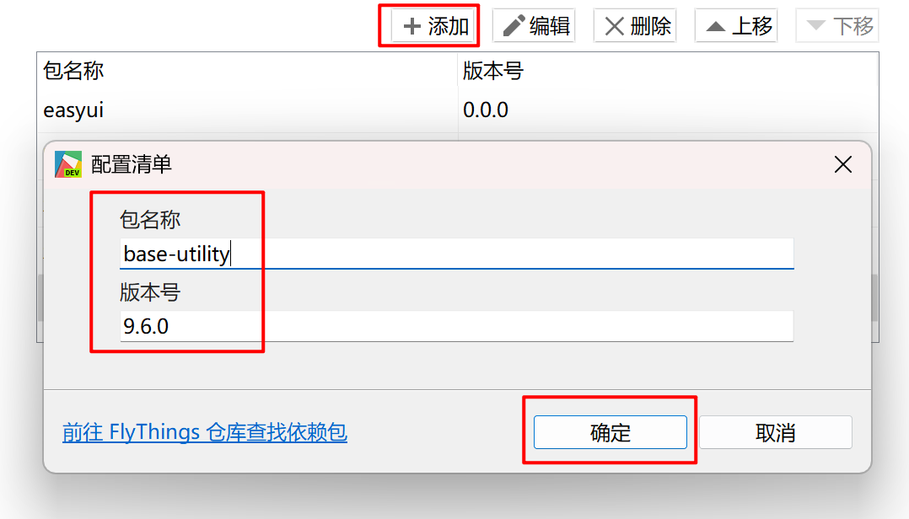
建议在依赖包仓库中点击 复制，再在输入框中 Ctrl+V 粘贴，可自动填充包名和版本号。
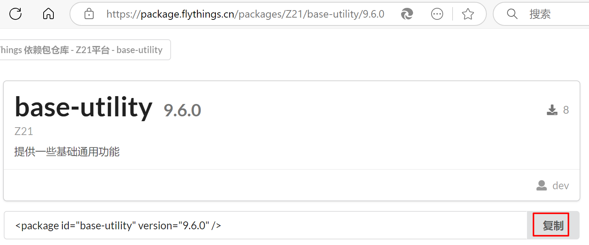
⚠️ 重要：添加完成后，记得点击菜单
更新依赖完成更新。
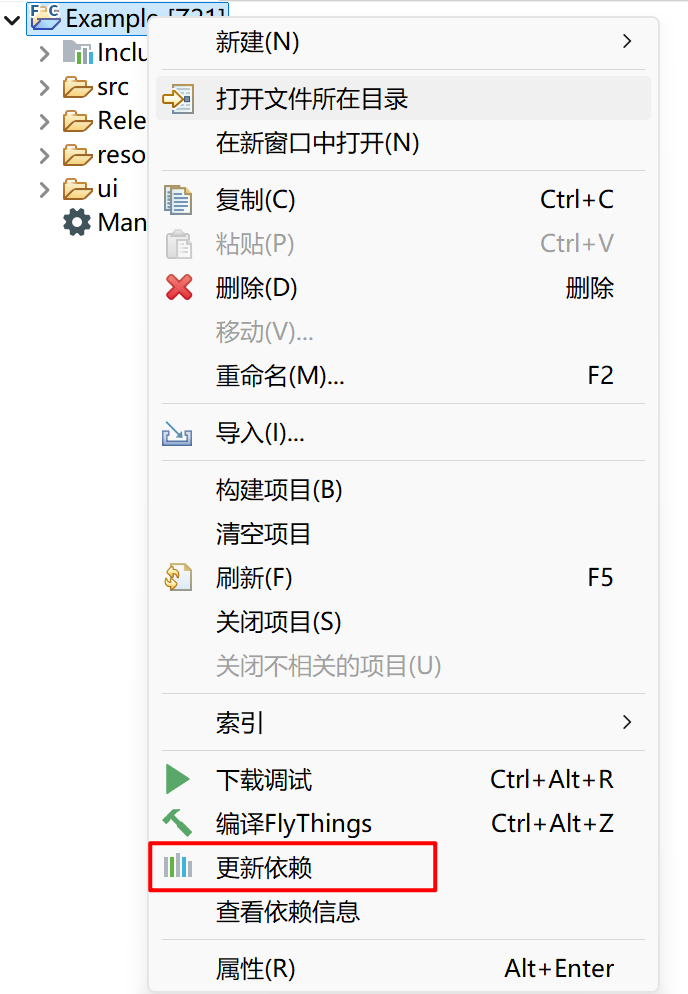
更新成功后，项目 Include 里会出现依赖包的头文件，即可在代码中引用：
#include <base/base.h>
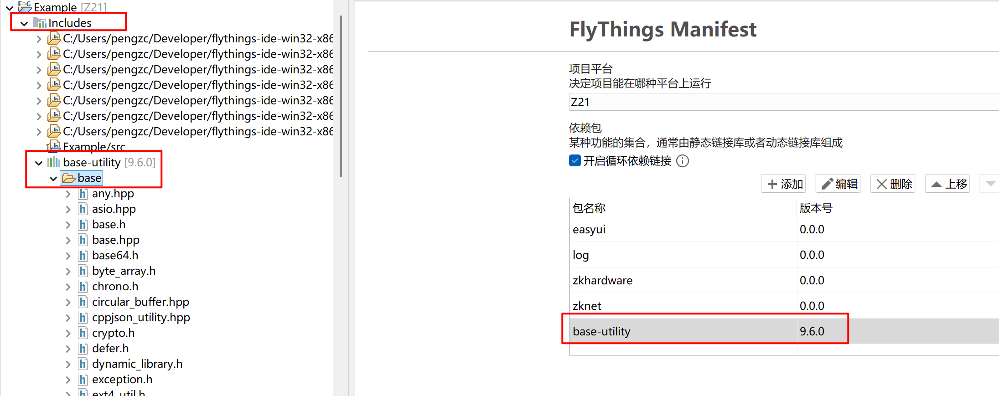
如果是私有的静态/动态链接库，可将库文件放到约定文件夹下，编译时将自动链接。
在项目 src 文件夹内新建 dependencies 文件夹。
在 dependencies 内新建 include 文件夹（编译时作为头文件搜索目录）。
在 dependencies 内新建 lib 文件夹（编译时自动链接其中所有静态库及动态库）。
dependencies/lib-no-link 文件夹，其中的动态库仅随程序打包，不参与编译。lib 开头，静态库后缀 .a，动态库后缀 .so，否则将被忽略。将头文件复制到 include 文件夹，库文件复制到 lib 文件夹，目录结构如下：
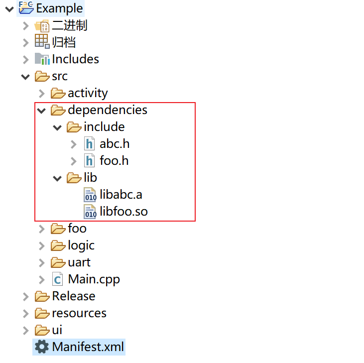
右键项目名，在上下文菜单中选择 更新依赖，再次编译后依赖生效。
在代码中引用：
#include "foo.h"
#include "abc.h"
双击打开 Manifest.xml，切换到 源文件 视角，按规则添加 target 标签即可制作静态或动态链接库。
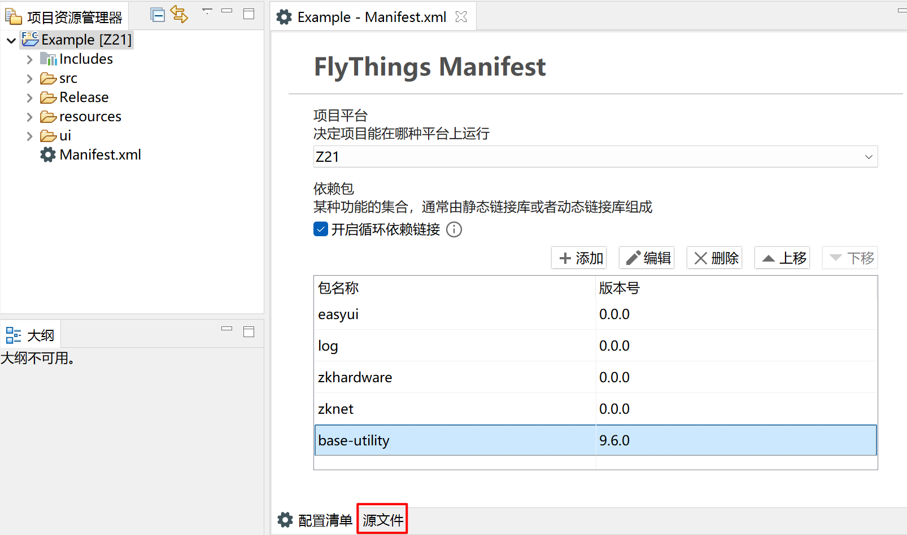
<?xml version="1.0" encoding="UTF-8"?>
<!DOCTYPE xml>
<manifest platform="Z21">
<targets>
<!-- 生成 libfoo1.a 静态链接库 -->
<target id="foo1" type="staticLibrary">
<header filter="src/foo/hello.h" />
<source filter="src/foo/hello.cpp" />
</target>
<!-- 生成 libfoo2.so 动态链接库 -->
<target id="foo2" type="sharedLibrary">
<header filter="src/foo/hello.h" />
<source filter="src/foo/hello.cpp" />
</target>
</targets>
</manifest>
id：库名称；type：staticLibrary（静态库）或 sharedLibrary（动态库）header：指定随库提供的头文件，filter 支持通配符source：指定需要编译成库的源文件，filter 支持通配符编译后，库文件将生成到 Release 目录下。
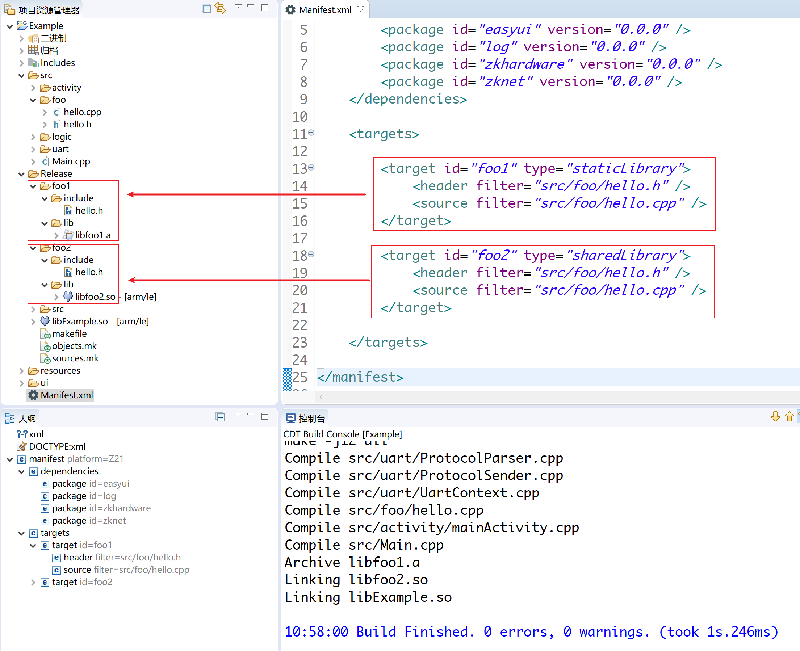
新建项目时生成的 Main.cpp 中，onStartupApp() 函数返回值决定了启动界面：
const char* onStartupApp(EasyUIContext *pContext) {
return "mainActivity"; // 对应 main.ftu
}
EASYUICONTEXT->openActivity("subActivity");
如需传递参数：
Intent *pIntent = new Intent();
pIntent->putExtra("cmd", "open");
pIntent->putExtra("value", "ok");
EASYUICONTEXT->openActivity("subActivity", pIntent);
在目标界面的 onUI_intent 中接收：
static void onUI_intent(const Intent *intentPtr) {
if (intentPtr) {
std::string cmd = intentPtr->getExtra("cmd"); // "open"
std::string value = intentPtr->getExtra("value"); // "ok"
}
}
new 出来的 Intent 不需要手动 delete，由框架内部自动释放。
EASYUICONTEXT->goBack(); // 返回上一级界面
EASYUICONTEXT->goHome(); // 直接回退到启动界面
EASYUICONTEXT->closeActivity("subActivity"); // 关闭指定界面（不能关闭启动界面）
也可以将按钮 ID 设置为 sys_back 或 sys_home，系统会自动响应对应功能。
界面之间形成栈结构，后打开的界面在层级上层。
onUI_init → onUI_intent → onUI_showonUI_initgoBack()：弹出顶层界面，触发 onUI_quit，然后触发下一层的 onUI_showgoHome()：直接回退到启动界面，弹出其他所有界面closeActivity("xxx")：移除指定界面；若移除的不是顶层界面，下一层不触发 onUI_show如果界面打开时申请了资源，记得在
onUI_quit中释放。
定时器适用于需要定时执行操作的场景，例如定时发送心跳包、定时查询数据刷新界面、轮询任务等。
在 Logic.cc 的定时器数组中添加结构体即可注册：
static S_ACTIVITY_TIMEER REGISTER_ACTIVITY_TIMER_TAB[] = {
{0, 6000}, // 定时器id=0，时间间隔6秒
{1, 1000}, // 定时器id=1，时间间隔1秒
};
结构体定义：
typedef struct {
int id; // 定时器ID，不能重复
int time; // 时间间隔，单位：毫秒
} S_ACTIVITY_TIMEER;
定时器触发时，系统调用对应 Logic.cc 中的 onUI_Timer(int id)：
static bool onUI_Timer(int id) {
switch (id) {
case 0:
// id=0 的定时器逻辑
break;
case 1:
// id=1 的定时器逻辑
break;
default:
break;
}
return true; // 返回 true 继续运行，false 停止
}
📌 注意
- 每个界面的定时器独立，不同界面的定时器 id 可以相同
- 界面未销毁时定时器持续运行，界面销毁后自动停止
REGISTER_ACTIVITY_TIMER_TAB 方式不够灵活，Activity 类提供了以下三个方法用于动态控制定时器：
void registerUserTimer(int id, int time); // 注册定时器
void unregisterUserTimer(int id); // 取消定时器
void resetUserTimer(int id, int time); // 重置定时器
使用示例：
static bool isRegistered = false;
#define TIMER_HANDLE 2
static bool onButtonClick_ButtonTimerOn(ZKButton *pButton) {
if (!isRegistered) {
mActivityPtr->registerUserTimer(TIMER_HANDLE, 500);
isRegistered = true;
}
return false;
}
static bool onButtonClick_ButtonTimerOff(ZKButton *pButton) {
if (isRegistered) {
mActivityPtr->unregisterUserTimer(TIMER_HANDLE);
isRegistered = false;
}
return false;
}
⚠️ 重要：
registerUserTimer、unregisterUserTimer、resetUserTimer三个函数不能在onUI_Timer中调用，会造成死锁。
本篇旨在帮助理解 FlyThings 项目串口部分代码从零到有的过程，从而更容易理解最终提供的串口代码流程。
该产品基于 Linux 系统，可完全沿用标准 Linux 编程来操作串口，分为以下5个步骤：
#include <fcntl.h>
int fd = open("/dev/ttyS0", O_RDWR | O_NOCTTY);
/dev/ttyS0 类似 Windows 上的 COM1，打开成功返回非负的串口描述符，失败返回负数。
int openUart() {
int fd = open("/dev/ttyS0", O_RDWR | O_NOCTTY);
struct termios oldtio = { 0 };
struct termios newtio = { 0 };
tcgetattr(fd, &oldtio);
newtio.c_cflag = B115200 | CS8 | CLOCAL | CREAD;
newtio.c_iflag = 0;
newtio.c_oflag = 0;
newtio.c_lflag = 0;
newtio.c_cc[VTIME] = 0;
newtio.c_cc[VMIN] = 1;
tcflush(fd, TCIOFLUSH);
tcsetattr(fd, TCSANOW, &newtio);
fcntl(fd, F_SETFL, O_NONBLOCK);
return fd;
}
注意：以上为默认配置（8数据位、1停止位、无校验），非特殊需求请勿修改。
unsigned char buffer[1024] = {0};
int ret = read(fd, buffer, sizeof(buffer));
返回值 > 0 表示读取到数据，返回字节数；≤ 0 表示错误或暂无数据。
注意：
read不保证一次读完所有数据，需要多次调用才能保证数据完整。
unsigned char buffer[4] = {0x01, 0x02, 0x03, 0x04};
int ret = write(fd, buffer, sizeof(buffer));
返回值等于第三个参数值表示发送成功，否则表示异常。
close(fd);
屏和 MCU 之间通过串口进行通信，双方约定好协议即可交互。与传统串口屏作为从机不同，FlyThings 屏具有逻辑处理能力，作为主机端。
新建工程时工具会自动生成串口通讯代码，并提供协议数据与界面交互的回调接口，开发人员只需关注数据在 UI 上的展示，通讯部分由框架自动完成。协议解析部分需根据实际通讯协议做相应修改。
软件 APP 分为两层：
串口 HAL 层
UartContext：串口实体控制层，提供串口开关、发送、接收接口ProtocolData：定义通讯数据结构体，保存协议解析出的变量ProtocolSender：完成数据发送封装ProtocolParser：完成协议解析，将数据存入 ProtocolData，并管理串口数据变化的回调接口APP 应用接口层
ProtocolParser 注册监听获取更新的 ProtocolDataProtocolSender 向 MCU 发送指令UartContext 为标准化实现，一般无需修改。
以常见协议为例：
| 协议头（2字节） | 命令（2字节） | 数据长度（1字节） | 数据（N字节） | 校验（1字节，可选） |
|---|---|---|---|---|
| 0xFF55 | Cmd | len | data | checksum |
CommDef.h 中定义帧头和最小包长：
// 开启checksum校验：#define PRO_SUPPORT_CHECK_SUM
#define CMD_HEAD1 0xFF
#define CMD_HEAD2 0x55
#define DATA_PACKAGE_MIN_LEN 5 // 无校验：2+2+1=5；有校验：+1=6
// 1. 修改帧头定义
#define CMD_HEAD1 0xFF
#define CMD_HEAD2 0x55
// 2. 帧头长度变化时同步修改判断语句
while ((mDataBufLen >= 2) && ((pData[0] != CMD_HEAD1) || (pData[1] != CMD_HEAD2)))
dataLen = pData[4]; // pData[4] 为长度字节，按需修改
frameLen = dataLen + DATA_PACKAGE_MIN_LEN; // 帧长度=数据长度+头尾长度
| 平台 | 软件串口号 | 硬件串口号 |
|---|---|---|
| Z11系列 | ttyS0 / ttyS1 | UART1 / UART2 |
| Z6系列 | ttyS0 / ttyS1 / ttyS2 | UART0 / UART1 / UART2 |
| Z20系列 | ttyS1 / ttyS2 / ttyS3 | UART1 / FUART / UART2 |
| Z21系列 | ttyS1 / ttyS2 / ttyS3 | UART1 / UART2 / UART3 |
新建工程时可在向导中配置波特率；也可右键工程选择 Properties 修改。
在 /Main.cpp 中控制：
void onEasyUIInit(EasyUIContext *pContext) {
UARTCONTEXT->openUart(CONFIGMANAGER->getUartName().c_str(), CONFIGMANAGER->getUartBaudRate());
}
void onEasyUIDeinit(EasyUIContext *pContext) {
UARTCONTEXT->closeUart();
}
常规项目默认支持一个串口。如需多串口，需修改串口部分代码。
串口号及波特率在 /uart/UartContext.cpp 的 init() 中配置：
void UartContext::init() {
uart0 = new UartContext(UART_TTYS0);
uart0->openUart("/dev/ttyS0", B9600);
uart1 = new UartContext(UART_TTYS1);
uart1->openUart("/dev/ttyS1", B9600);
}
发送数据到指定串口：
unsigned char buf[2] = {1, 1};
sendProtocolTo(UART_TTYS1, 1, buf, 2); // 发送到 ttyS1
sendProtocolTo(UART_TTYS0, 1, buf, 2); // 发送到 ttyS0
如需区分数据来源，在 SProtocolData 中添加标识字段：
// ProtocolData.h
typedef struct {
BYTE power;
int uart_from; // 来自哪一个串口
} SProtocolData;
在 procParse 中赋值，在 Logic.cc 的 onProtocolDataUpdate 中读取 data.uart_from 判断来源。
#include "net/NetManager.h"
打开系统内置 Wi-Fi 设置界面：
EASYUICONTEXT->openActivity("WifiSettingActivity");
获取 WifiManager：
WifiManager *pWM = NETMANAGER->getWifiManager();
// 或定义宏方便调用
#define WIFIMANAGER NETMANAGER->getWifiManager()
常用接口：
WIFIMANAGER->isSupported(); // 检测是否支持 Wi-Fi
WIFIMANAGER->isWifiEnable(); // 检测 Wi-Fi 是否开启
WIFIMANAGER->enableWifi(true); // 开关 Wi-Fi
WIFIMANAGER->startScan(); // 扫描 Wi-Fi
WIFIMANAGER->connect(ssid, pw); // 连接 Wi-Fi
WIFIMANAGER->disconnect(); // 断开连接
WIFIMANAGER->isConnected(); // 是否已连接
WIFIMANAGER->getConnectionInfo(); // 获取已连接 Wi-Fi 信息
// 注册/反注册监听
void addWifiListener(IWifiListener *pListener);
void removeWifiListener(IWifiListener *pListener);
打开系统内置热点设置界面：
EASYUICONTEXT->openActivity("SoftApSettingActivity");
获取 SoftApManager：
#include "net/NetManager.h"
#define SOFTAPMANAGER NETMANAGER->getSoftApManager()
常用接口：
SOFTAPMANAGER->setEnable(true); // 开关热点
SOFTAPMANAGER->isEnable(); // 热点是否开启
SOFTAPMANAGER->getSoftApState(); // 获取当前热点状态
SOFTAPMANAGER->setSsidAndPwd("name", "pw"); // 修改热点名称和密码
SOFTAPMANAGER->getSsid(); // 获取热点名称
SOFTAPMANAGER->getPwd(); // 获取热点密码
// 热点状态枚举
// E_SOFTAP_DISABLED 关闭状态
// E_SOFTAP_ENABLING 打开中
// E_SOFTAP_ENABLED 打开成功
// E_SOFTAP_DISABLING 关闭中
// E_SOFTAP_ENABLE_ERROR 打开失败
// 注册/反注册状态监听
void addSoftApStateListener(ISoftApStateListener *pListener);
void removeSoftApStateListener(ISoftApStateListener *pListener);
以键值对方式永久存储少量数据（如账号、密码、配置等），掉电保存。
#include "storage/StoragePreferences.h"
存储接口：
StoragePreferences::putString("username", "zhang san");
StoragePreferences::putInt("age", 20);
StoragePreferences::putBool("power", true);
StoragePreferences::putFloat("temperature", 30.12);
读取接口（第二个参数为默认值）：
std::string name = StoragePreferences::getString("username", "");
int age = StoragePreferences::getInt("age", 0);
bool power = StoragePreferences::getBool("power", false);
float temp = StoragePreferences::getFloat("temperature", 0);
删除/清空：
StoragePreferences::remove("username");
StoragePreferences::clear();
⚠️ 注意：数据以文件形式保存在 flash 中，请勿频繁写入，以免损坏 flash。该分区大小通常在几百 KB 以内，可通过
adb shell df查看data分区大小。
#include "utils/TimeHelper.h"
获取当前时间：
struct tm *t = TimeHelper::getDateTime();
// t->tm_year + 1900 = 实际年份
// t->tm_mon + 1 = 实际月份
设置时间：
struct tm t;
t.tm_year = 2017 - 1900;
t.tm_mon = 9 - 1;
t.tm_mday = 13;
t.tm_hour = 16;
t.tm_min = 0;
t.tm_sec = 0;
TimeHelper::setDateTime(&t);
// 或使用字符串（格式：yyyy-MM-dd HH:mm:ss）
TimeHelper::setDateTime("2017-09-13 16:00:00");
系统自动挂载路径：
/mnt/extsd/mnt/usb1、/mnt/usb2、/mnt/usb3检查挂载状态：
#include <os/MountMonitor.h>
MOUNTMONITOR->isMounted("/mnt/extsd"); // TF卡是否已挂载
MOUNTMONITOR->isMounted("/mnt/usb1"); // U盘是否已挂载
访问文件路径 = 挂载目录 + 文件自身路径。
#include "os/MountMonitor.h"
class MyMountListener : public MountMonitor::IMountListener {
public:
virtual void notify(int what, int status, const char *msg) {
switch (status) {
case MountMonitor::E_MOUNT_STATUS_MOUNTED: // 插入，msg 为挂载路径
LOGD("mount path: %s\n", msg);
break;
case MountMonitor::E_MOUNT_STATUS_REMOVE: // 移除，msg 为卸载路径
LOGD("remove path: %s\n", msg);
break;
}
}
};
static MyMountListener sMyMountListener;
// 注册监听
MOUNTMONITOR->addMountListener(&sMyMountListener);
// 移除监听
MOUNTMONITOR->removeMountListener(&sMyMountListener);
也可使用新版接口监听指定路径（需 base-utility 包 9.0.0+）：
#include <base/base.h>
static base::MountNotification mn_extsd("/mnt/extsd", onMyMountEvent); // 监听TF卡
static base::MountNotification mn_usb1("/mnt/usb1", onMyMountEvent); // 监听U盘
// 传空字符串表示监听所有挂载事件
static base::MountNotification mn_any("", onMyMountEvent);
注意：
MountNotification实例需用static修饰，否则实例销毁后停止监听。
#include "utils/GpioHelper.h"
// 读取脚位状态：返回 1（高电平）、0（低电平）、-1（失败）
GpioHelper::input("B_02");
// 设置脚位输出：1 高电平，0 低电平；返回 0 成功，-1 失败
GpioHelper::output("B_02", 1);
各平台可用脚位（部分）：
| 平台 | 可用脚位 |
|---|---|
| Z11S | B_02、B_03、E_20 |
| SV50PB | PIN7~PIN14、PIN23、PIN24、PIN26、PIN27 |
#include "utils/SpiHelper.h"
uint8_t tx[512], rx[512];
// 参数：总线号、模式、时钟频率、位宽、低位在前
SpiHelper spi(1, SPI_MODE_0, 50*1000*1000, 8, false);
spi.write(tx, 5); // 单工写
spi.read(rx, 8); // 单工读
spi.halfduplexTransfer(tx, 5, rx, 8); // 半双工传输
#include <unistd.h>
#include <sys/reboot.h>
sync(); // 同步数据，防止丢失
reboot(RB_AUTOBOOT); // 重启
通过 ADB 终端查看：
adb shell cat /proc/meminfo # 内存信息
adb shell cat /proc/cpuinfo # CPU信息
adb shell busybox top # 实时CPU使用情况
通过代码读取内存信息：
FILE *file = fopen("/proc/meminfo", "r");
char line[256];
unsigned long memTotal, memFree, memAvailable;
while (fgets(line, sizeof(line), file)) {
if (strstr(line, "MemTotal:"))
sscanf(line, "MemTotal: %lu kB", &memTotal);
else if (strstr(line, "MemFree:"))
sscanf(line, "MemFree: %lu kB", &memFree);
else if (strstr(line, "MemAvailable:"))
sscanf(line, "MemAvailable: %lu kB", &memAvailable);
}
fclose(file);
注意：如设备使用 A 口（大口）USB，默认为 U 盘模式，可通过以下代码切换为 ADB 模式（重启生效）：
连接成功后，在项目资源管理器中右键项目名，选择 下载调试，或使用快捷键 Ctrl+Alt+R。工具会自动编译并将程序下载到设备中。
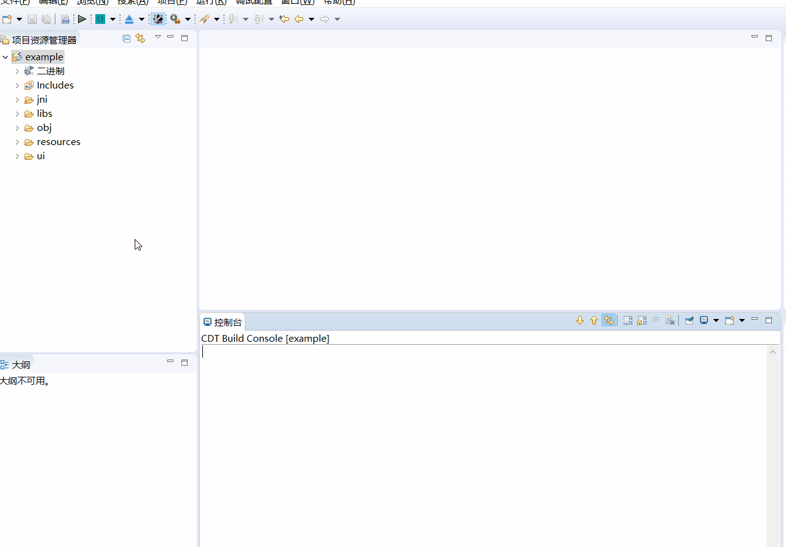
注意：下载调试不会将程序固化到设备中，拔卡或断电重启后程序将恢复。如需固化，请使用制作升级镜像。
adb push ./update.img /tmp/update.img
adb shell setprop sys.zkupgrade.flag 255
adb shell setprop sys.zkupgrade.dir /tmp
adb shell setprop ctl.restart zkswe
在菜单栏选择 调试配置 -> 打开系统命令行 后可执行：
adb shell logcat -v time # 查看带时间的日志
adb shell logcat # 查看简单日志
adb logcat -c # 清空日志缓存
adb shell cat /proc/meminfo
adb shell busybox top
#include "utils/Log.h"
LOGD("onButtonClick_Button1\n"); // 用法与 printf 相同
adb shell logcat -v timeadb connect 192.168.1.123，再输入 adb shell logcat -v timeCtrl+C 停止日志显示adb shell setprop ctl.stop zkswe # 停止应用
zkgui # 启动应用并查看标准输出
adb shell cat /proc/kmsg
注意：TF卡仅支持 FAT32 格式
设置 按钮，设置 ADB 下载目录：/mnt/extsd（TF卡）或 /mnt/usb1（U盘）。EasyUI.cfg、ui、lib、font 等文件。将程序固化到设备中，断电重启后程序不会恢复。
update.img 输出目录。update.img 文件。update.img 拷贝到 FAT32 格式的TF卡根目录，插入设备重新上电。在屏幕损坏或触摸不准时，可在 TF 卡根目录创建无后缀文件 zkautoupgrade，插卡后系统将自动勾选升级项并在 2 秒后开始升级。
zkautoupgrade 文件中填写数字可自定义延时秒数zkrebootdelay 文件并填写秒数，可控制升级完成后的延时重启时间（填 -1 表示不重启）通过 HTTP 下载 update.img 到设备，再触发升级检测：
#include "os/UpgradeMonitor.h"
// 检测指定目录下是否有 update.img，有则弹出升级提示框
UpgradeMonitor::getInstance()->checkUpgradeFile("/mnt/extsd/temp");
避免反复升级：将镜像下载到 /mnt/extsd/temp/ 等子目录（而非 /mnt/extsd/），并同步修改检测函数的参数。
强制自动更新：在下载完成后创建 zkautoupgrade 文件即可触发自动升级。
在同一局域网中，通过 IP 对多台设备同时升级。
设置，配置：
update.img）ro.app.name 属性）ro.app.version 属性）*）注意：仅支持 Wi-Fi 或以太网连接的设备，不支持 USB；仅支持 Z20、Z21、Z261 平台。
在UI主线程中做耗时操作导致插卡不显示升级界面
界面刷新在UI主线程中处理，如果主线程有耗时操作或出现死循环，将影响UI刷新，导致插卡不显示升级界面。onUI_init、onUI_Timer 等回调均在UI主线程中调用，请检查这些函数中是否有耗时操作。出现此情况可重新上电，系统起来后会优先检测是否需要升级。
无法下载调试/下载调试失败
首先确认连接方式：带 Wi-Fi 的设备仅支持 Wi-Fi 连接，不带 Wi-Fi 的设备只能使用 USB 线连接。然后在菜单栏选择 调试配置 -> ADB配置，设置对应的连接方式后再次尝试下载。
程序突然自己重启或卡住
出现非预期情况时，首先查看日志，尝试反复重现问题。程序崩溃大部分原因是指针的错误用法（空指针、数组越界、内存释放后仍在使用等）。程序卡住则从 线程死锁、代码死循环、长时间耗时操作 等方向分析。
适用于 Windows XP / Vista / 7 / 8 / 10 / 11。
Windows XP 用户安装驱动后建议重启。